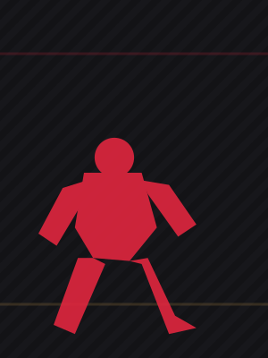

From a rough 2024 to four straight wins
Two losses to end one stretch, four wins to open the next — Allen's middleweight résumé now reads like a complete case.
9 min readOct 2026
Brendan Allen's career arc — from back-to-back regional losses to a UFC middleweight contender one win from a title opportunity.

From a pair of five-round regional decision losses to a 14-finish submission résumé — mapped fight by fight.

Dropped decisions to Eryk Anders and Anthony Hernandez on the regional scene, sandwiched around winning the LFA middleweight title.
Opened his Octagon run with a rear-naked choke — the first of fourteen career finishes by that method.
A setback that preceded a seven-fight win streak through the middleweight rankings.
Dropped consecutive decisions to Nassourdine Imavov and Anthony Hernandez — his second career loss to Hernandez.
Beat Marvin Vettori, Reinier de Ridder, and Edmen Shahbazyan, then submitted Christian Leroy Duncan in round five — a run that's put him a win away from title contention.
Two losses to end one stretch, four wins to open the next — Allen's middleweight résumé now reads like a complete case.
A reach advantage and career-best output through four rounds weren't enough to survive the fifth.
A title opportunity is being floated, but nothing's confirmed — here's what the resume says he's earned.
Coaching adjustments and in-fight reads that shaped these career turns.
Read Corner Notes